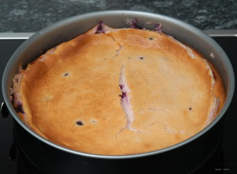

| Zutaten: | |
| 250 g | Petit Beurre |
| 125 g | Butter |
| 375 g | Halbfettquark |
| 200 g | Zucker |
| 3 | Eier |
| 1 El | Zitronensaft |
| 1 Pack | Vanillezucker |
| 2 dl | M-Dessert Sauermilch |
| 1 El | Mehl |
| 1 Prise | Salz |
| Handvoll | Blaubeeren |
Die Springform gut ausbuttern.
In einer Schüssel die Petit Beurre zerbröseln. Die Butter schmelzen und darüber giessen. Die Brösel zusammendrücken und in der Springform einen Boden formen. Anschliessend die Springform in den Tiefkühler legen bis die Füllung rein kommt.
Den Halbfettquark und den Zucker in eine Schüssel geben.
2 Eier trennen, dabei das Eigelb zum Quark/Zucker geben und die Eiweiss in einen Becher zum steif schlagen.
Das dritte Ei zum Quark geben sowie den Zitronensaft, den Vanillezucker, den Esslöffel Mehl und eine Prise Salz
2 dl M-Dessert Sauermilch zugeben und mischen.
Die Eiweiss steif schlagen und einen Esslöffel Zucker zugeben.
Das Eiweiss unterheben.
Baubeeren dazu mischen, in die Springform giessen.
Bei 180°C 1 - 1.25 Stunden backen.
Kirsty (Australia) via Sandra Keller, 16.8.1999
Schmeckt vorzüglich. Ich habe gefrorene Blaubeeren aufgetaut und beigegeben. Das führte zu einer violettfärbung der Masse. Falls das stört könnte man vielleicht die Beeren auf den Teigboden geben und die Masse darüber. Mit frischen Beeren passiert das vermutlich sowieso weniger. RE 16.12.2009
@LINKBACK_TAG@ @WAKELOCK@